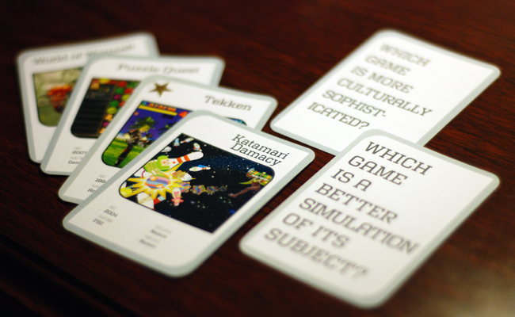

Metagame is a large scale social real-world game in which, being appropriately named, the purpose is to debate game aesthetics. Perfect for us opinionated geeks at the Game Developers Conference!
When starting the game, players receive small decks of cards consisting of four iconic games and two topics for debate, such as which game created a bigger subculture, which is more dreamlike, which gets better over time, which is a better simulation of its subject, and so on.
Players challenge one another by displaying a debate topic card and game card to a potential opponent, who in turn responds with a game card of his/her own. The debate begins - "No, Katamari Damacy is more culturally sophisticated than Grim Fandango, because..." - as each player takes a turn. Finally, passerby acting as judges name the better debater the winner, who receives a random card from their opponent's deck. Obviously, you want to win as many cards as possible - and randomly marked "star" cards serve as the final metric for scoring who will win the game in the end.
The game has a bit of a history but its implementation this time around struck me as a particularly nice concept and execution, despite some reservations.
I wasn't nearly as struck by Backchatter, another Local No. 12 real-world game, despite it also being very well designed - and I realized the immediate difference was in the actual physical media that Metagame utilizes. Playing with and collecting cards is a game context and vocabulary that anyone who's ever played "Go Fish" is familiar with, and amassing an enormous deck taps into the same instincts that drive collectors of all kinds. It also helps that the cards are very nicely designed and tap into the nostalgia we have for the featured products on the front.
The balance of quantity was also picture-perfect - any more than six cards to start would likely have felt like too much to start off with, and any less may not trigger that collection instinct.
The strategies to encourage participation were also elegant and simple - bring a new player to pick up a deck, and you get another card.
Having a subjective set of opinions decide the final victor of any debate struck me as somewhat un-gamelike, but it really just makes the potential randomness of your judges and other social factors a part of the game itself.
One game-breaking flaw could be players setting up situations in which undercover allies judge their debates favorably. There are certainly ways that a game that relies on the honor system could be improved - maybe by integrating the assumption of potential cheaters into the mechanics themselves - a game layer involving the judges, penalties, or other possibilities.
I would have liked to see some additional guidelines for judging, if just to make for more consistent experiences. A minimum number of judges? A game incentive for judging other game sessions?
Finally I would like to see the introduction of a more objective element to mix in with the highly subjective mechanic of debate followed by decision. Perhaps a form of trump card? Sacrificing a second card to add a new game to the debate? A surprise in some way that didn't rely entirely on subjectivity, while not sacrificing it entirely as the primary game element, would have really made things even more interesting than they already were.
Design Notes:
Debate in and of itself is not a game mechanic - but it is an element that be worked into larger systems fairly well.
Don't underestimate the impact of well-designed physical media accompanying a non-digital game.
Try to mix in some element of objectivity in an otherwise subjectively determined game, or include additional rules to minimize inappropriate outcomes.
Game people, at least, love games about games.